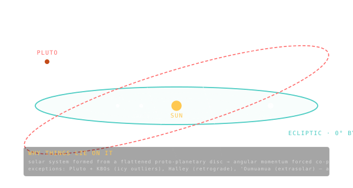

The Ecliptic Plane
The plane of Earth's orbit around the Sun — used as the reference for almost every solar-system measurement.

101 · zoom in
Hold up a flat plate and put a marble in the centre — that's the Sun. Now spin a smaller marble around the edge — that's Earth. The flat plate is the ecliptic plane. Earth's orbit defines it; everything else in the solar system gets measured against it.
Here's the strange thing: most of the solar system roughly lives on this plate. The eight planets are all within a few degrees of it. The Moon orbits Earth in a plane just 5 degrees off it. The asteroid belt is mostly on it. This is not a coincidence — it's a fossil of how the solar system formed, when everything condensed out of one big spinning disc of gas and dust around the young Sun. The disc set the plane and most of what's left still respects it.
Comets are the wild cards. Long-period comets come in from any direction at any tilt — they're remnants of the outer Oort Cloud which never settled into the disc. Pluto orbits at 17 degrees off-plane, which is one reason it got demoted to dwarf planet — the eight "real" planets are all in line.
The Sun, Earth, and the Moon trace out paths in space. The Earth's orbit defines a plane. Looking out from Earth, the Sun appears to move along this plane against the background stars — that path on the sky is the ecliptic. Most other solar-system bodies lie close to it: the eight planets are all within a few degrees, the asteroid belt clusters near it, comets are scattered.
The ecliptic is the reference plane for orbital inclinations of solar-system bodies. Earth's inclination is 0° by construction. Mercury at 7°, Pluto at 17°, are measured against this plane. The vernal equinox direction — where the ecliptic crosses Earth's equator going north — is the zero-longitude reference, used to anchor every orbit's longitude of ascending node and argument of periapsis.
Orrery's `/explore` view looks down on the ecliptic plane from above by default — the natural perspective for thinking about heliocentric motion. Tilting the view shows you why Mercury and Pluto's orbits look 'wrong' even though they're perfectly Keplerian: their orbital planes don't match the rest of the gang.
SEE IN THE APP
- /explore Orrery's solar system view defaults to the ecliptic plane
LEARN MORE
- intro Wikipedia · Ecliptic